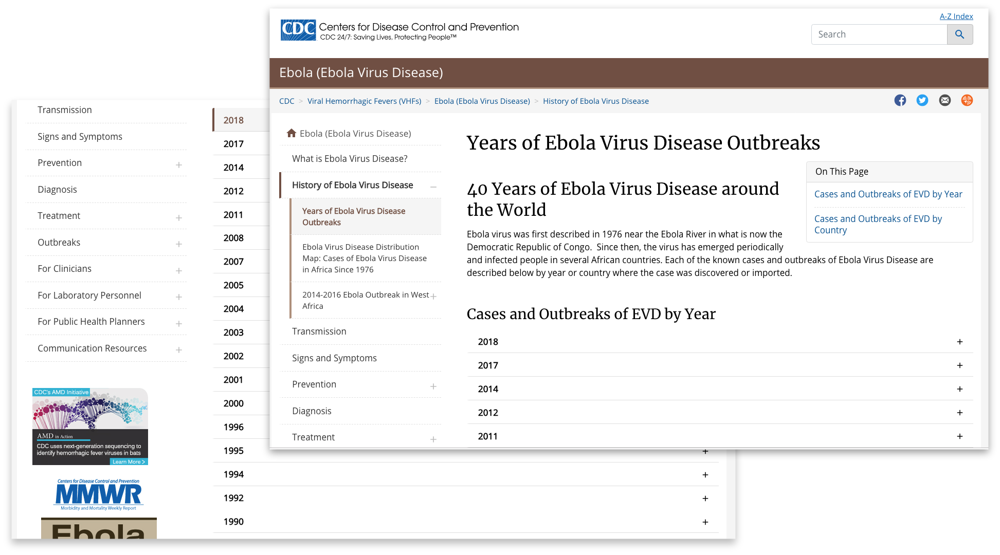
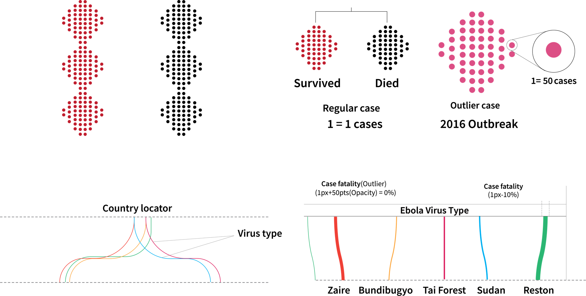

Overview
As part of our data visualization semester project, I developed this historic timeline of the Ebola virus which was exhibited at the university gallery. The initial visualization was a poster which I later collaborated with a programmer to develop this into a standard tool to be accessed by the general public.
Client
Center for Disease Control (CDC)Role
Data Analysis| Data Visualisation design- Data Visualisation
- Data Story
Context
In 2014, an outburst of the “deadliest disease in Africa” happened in West Africa. The Ebola Virus Disease (EVD) is a rare viral disease that transmits to humans through contact or bodily fluids. It was originally observed in the then Zaire, now, the Democratic Republic of Congo in 1976. The virus is believed to spread through bats and bush meat. Since August of 2018, there is a new EVD outbreak in Congo. The continuous and wild spread has drawn the worldwide attention from medical professionals to governments at different levels. We attempt to understand the developing trend of this virus since it was firstly identified.
How do I tell a compelling story with the data to depict the deadly history of the virus whiles emphasizing the 2014 outbreak?
Deliverable
Introducing 40year of Ebola Infomation Visualisation tool. We developed this visualization to help the general public to understand more about the disease. In this InfoVis tool, we built a historical timeline from 1976 to 2018 of all the countries that have been affected by the EVD. We show the type, severity, and spread of EVD that affect countries throughout the years. (Main website)
Data Analysis

The data was directly derived from the CDC website on the Ebola virus. The websites updates constantly which also feed the tool in real-time. The data was initially extracted populated to identify the relevant information the user would want to understand. The data consists of the year of the outbreak, reported number of cases, deaths, survival, country, and species of Ebola.
Brainstorming

During the ideation and brainstorming stage, I explored several options of visualization timelines, health, and disease, etc. With the general public as the audience, my goal was to present a visualization that was easy to understand. After several ideations, I settled on taking inspiration from the structure of the Ebola virus itself to tell the history of it. With the structure of the glycoprotein being the most obvious part of the virus I concluded on using it to depict the deaths, survival and the number of cases. I also found during my research that most people before and even don't know that Ebola had been identified in other countries outside of Africa. This also made me consider highlight the locations as well.
Design process & Iteration

One of the most difficult parts of the design was the color selection and the and the choice of shapes to be used to depict the virus. The initial concept was to use a bubble (mushroom) to represent the cases, death, and survival but upon implementation, I realized it would occlude the map. The made me reconsider the shape to use leading me to use the diamond form which worked effectively.
Legend
A considerable amount of time was spent to refine the design components and the legend particularly. With clarity and simplicity as the goal, I had to trade of stylistic elements in favor of the dots.
